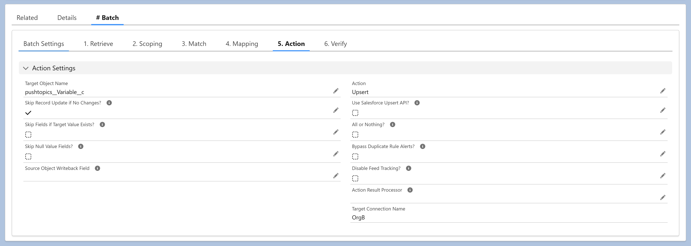

Action is the final step in an Executable — it defines what operation runs against the target object once Scoping, Match, and Mapping have produced the records to be processed.
Action Settings include:
- Target Object & Action — Choose the target object and the operation to perform: Insert, Update, Upsert, Delete, Undelete, Merge, Publish, or extended actions like Lead Conversion, Send Email, and Bell Notification.
- Update Behavior — Skip Record Update if No Changes, Skip Fields if Target Value Exists, and Skip Null Value Fields give precise control over when and how target fields are written.
- DML Controls — All or Nothing governs whether partial successes are allowed; Bypass Duplicate Rule Alerts suppresses Salesforce duplicate warnings; Use Salesforce Upsert API opts into the native upsert behavior; Disable Feed Tracking suppresses Chatter feed entries for the operation.
- Source Writeback — Optionally write a value back to the source record after a successful action — useful for marking records as processed, deployed, or synced. Configured via Source Object Writeback Field and Source Object Writeback Value.
- Action Result Processor — Plug in custom logic to process the result of each action (e.g., post-action handling, custom logging).
